13 Geração de linguagem natural
13.1 Introdução
Em um dos seus contos mais famosos, o escritor Argentino Jorge Luis Borges introduz a Biblioteca de Babel. Arquitetada de forma hexagonal1, a biblioteca descrita armazena todos os textos gerados a partir da combinação de 23 caracteres do alfabeto romano: A-Z, espaço, vírgula e ponto, como na Figura 13.1.
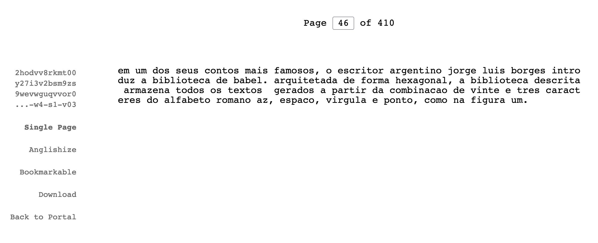
O conto sugere o cenário (distópico?) onde todos os textos já escritos, assim como todos que ainda serão escritos, como jornais, livros, este próprio texto e o conto do autor, estão presentes na biblioteca universal. Apesar de alertar que esta pode ser a questão errada a ser feita, Gatt; Krahmer (2018) questionam quem poderia escrever todos estes documentos. Poderia um computador gerar esta biblioteca?
Em teoria, tal questionamento pode ser facilmente respondido através de um algoritmo simples (mas pouco elegante e eficiente) como o representado no algoritmo da Figura 13.22, capaz de gerar (em um tempo infinito) tal biblioteca com livros de até 50 mil caracteres.
Um exemplo mais elaborado é o gerado pelo projeto The Library of Babel3 que, de fato, disponibiliza uma variação da biblioteca descrita pelo autor argentino. De maneira digital, o projeto disponibiliza uma biblioteca de câmaras hexagonais, cada uma com 4 paredes de estantes, cinco estantes por parede e 32 volumes por estante. Cada volume consiste em um texto de 410 páginas representando combinações dos 23 caracteres. O projeto, que talvez seja a melhor concretização da ideia de Borges, nos permite buscar por trechos de até 3200 caracteres, como, por exemplo, uma versão representada em 23 caracteres do parágrafo anterior, presente na página 329 do volume 26 da quinta estante da quarta parede de uma das câmaras hexagonais da biblioteca (Figura 13.1). Páginas aleatórias também podem ser acessadas, como a disponibilizada na Figura 13.3, representando uma combinação completamente aleatória e sem sentido. Tal exemplo nos permite apontar uma das deficiências desta biblioteca: apesar de armazenar todo o conhecimento presente em todos os livros que já ou ainda serão escritos, estes se encontram entre uma vasta gama de conteúdo sem sentido. Neste contexto, como encontrar e catalogar os textos que, de fato, contêm um significado?
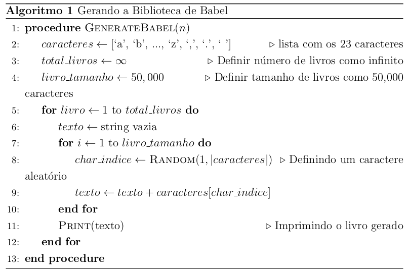
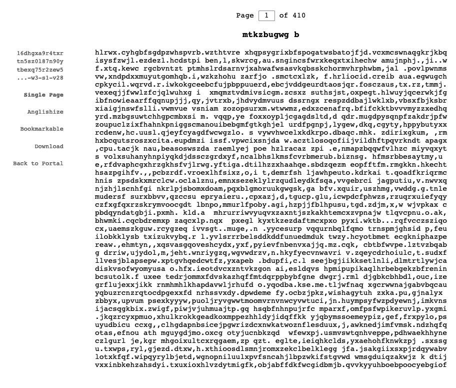
Voltando ao conto de Borges, talvez mais interessante que a biblioteca em si seja a figura do bibliotecário. Na vasta quantidade de textos sem significado ou sem ao menos seguir o padrão gramatical de uma língua como o da Figura 13.3, cabe a este o trabalho de catalogar os volumes que de fato estejam escritos em uma linguagem natural e contenham um significado. Neste cenário, seria onisciente o bibliotecário que conseguisse catalogar todo o conhecimento contido na biblioteca. Como mostramos, até certo ponto uma máquina poderia gerar a biblioteca de Babel com suas deficiências, mas seria esta capaz de se tornar a figura sacra do bibliotecário onisciente capaz de adquirir e gerar todos textos relevantes já escritos ou que serão escritos? Talvez seja a geração de linguagem natural que busque responder esta pergunta.
13.1.1 Geração de Linguagem Natural
Geração de linguagem natural é o campo de estudo que visa desenvolver soluções computacionais para gerar automaticamente linguagem natural, no formato de texto ou de voz, a partir de dados linguísticos ou não linguísticos como imagens, vídeos e representações de significado diversas (Ferreira, 2018; Gatt; Belz, 2010; Reiter; Dale, 2000). Esta ciência, também conhecida pelo acrônimo GLN (ou NLG, em inglês) remonta o início da Ciência da Computação, como data o artigo (Yngve, 1961) escrito no século 20 por Victor H. Yngve4, o qual apresenta o primeiro programa de computador para produção de sentenças gramaticais em inglês5. O objetivo do autor era avaliar a adequação da gramática, gerando sentenças sem necessariamente ter um objetivo comunicativo ou significado. Como expresso no próprio artigo, as sentenças geradas “eram em sua maior parte bastante gramaticais, embora, é claro, sem sentido”. Em uma relação com a Biblioteca de Borges, o programa apresentado em (Yngve, 1961) se enquadraria em um bibliotecário capaz de gerar textos que seguem a gramática da língua inglesa.
Mais tarde, surgem os primeiros sistemas de GLN capazes de gerar texto a partir de um objetivo comunicativo ou semântico fornecido como entrada. Este é o caso de (Simmons; Slocum, 1972), por exemplo, que propõe um sistema de geração de sentenças em inglês a partir de redes semânticas de entrada. Cada vez mais convergindo com o objetivo de um bibliotecário do conto de Borges, tais sistemas passaram a ser capazes de catalogar e expressar um significado ou objetivo de comunicação dado como entrada em um texto gramaticalmente correto expresso em uma ou mais línguas.
13.1.2 Seleção de Conteúdo e Realização Textual
Em GLN, a tarefa de converter a representação semântica em um texto é chamada de “Realização Textual”. Em outras palavras, sistemas como os propostos por (Yngve, 1961) e (Simmons; Slocum, 1972) são Realizadores Textuais focados em “como” gerar um texto que verbalize o conteúdo. Contudo, prévio à etapa de Realização Textual, também cabe a um sistema de geração de linguagem natural a tarefa de selecionar “qual” conteúdo deve ser expresso. Esta tarefa é popularmente conhecida como “Seleção de Conteúdo”. Salvo algumas exceções (Appelt, 1980), diferentes arquiteturas de GLN têm em comum a organização nessas duas etapas: primeiro a Seleção de Conteúdo, responsável por selecionar o conteúdo a ser expresso (e.g. uma imagem, um conjunto de textos de contexto a uma pergunta, um livro a ser sumarizado etc.) seguido da fase de Realização Textual, que converte o conteúdo selecionado em texto (e.g. descrição de uma imagem, resposta a uma pergunta, o sumário de um livro etc.).
13.1.3 Avaliação de sistemas de GLN
Um aspecto crítico do projeto de sistemas de GLN é como avaliar a sua qualidade. Ao contrário de aplicações de interpretação de linguagem natural (e.g. análise de sentimentos, classificação de textos etc.), cujo objetivo é extrair algum tipo de significado do texto, e que podem assim ser facilmente avaliadas pela contagem de seus erros e acertos, sistemas de GLN não podem ser avaliados desta forma. Via de regra, não existe uma forma única e correta de expressar um significado em forma textual, mas sim diversas alternativas possíveis com maior ou menor grau de gramaticalidade, fluência e outras características, o que torna a avaliação de sistemas deste tipo uma questão de pesquisa tão antiga quanto a própria história destes sistemas.
Assim como o processo computacional de GLN em duas etapas, sua avaliação também é normalmente feita em duas fases. Os textos gerados por sistemas de GLN são normalmente julgados pela sua adequação, i.e. se o texto gerado atende ao propósito ou tarefa específica para o qual foi criado, e pela sua fluência, i.e. se o texto gerado tem qualidade linguística, incluindo sua gramática, sintaxe e estilo. Por exemplo, se dado um estímulo como “Quem é Elis Regina?” um sistema de GLN gerasse o texto “Elza Soares foi uma cantora, compositora musical e intérprete de samba-enredo brasileira”, podemos considerar o resultado como fluente mas não adequado. Por outro lado, se a resposta fosse “Regina cantora brasileira”, este texto seria avaliado como adequado mas sem fluência.
A avaliação de um sistema de GLN pode ser conduzida de maneira automática ou manual, esta última também chamada de avaliação humana. De maneira automática, destacam-se métricas tradicionais como BLEU (Papineni et al., 2002), METEOR (Lavie; Agarwal, 2007), chrF++ (Popović, 2017), dentre outras. Estas métricas determinam a qualidade de um texto gerado automaticamente comparando-o com um texto de referência, geralmente conhecido como “padrão ouro”. Esta comparação é realizada no nível de tokens, e quanto mais alto o nível de sobreposição entre os tokens do texto gerado e os tokens do padrão ouro, maior será o valor destas métricas e, por extensão, da qualidade do texto gerado. Estudos como (Callison-Burch et al., 2010) mostram que métricas como BLEU (Subseção Bilingual Evaluation Under-study (BLEU)), a métrica automática mais popular, tende a explicar melhor a fluência de um texto do que a adequação. Outros estudos, porém, demonstram que tais métricas tradicionais não correlacionam com avaliações humanas, questionando se as mesmas, de fato, explicam de maneira fidedigna a qualidade de um texto (Novikova et al., 2017; Reiter, 2018).
Visando resolver os problemas de métricas tradicionais por sobreposição de tokens, métricas de qualidade estado-da-arte funcionam a partir da comparação dos embeddings extraídos dos textos gerados e o padrão ouro. BLEURT (Sellam et al., 2020), BERTScore (Zhang et al., 2020) e COMET (Rei et al., 2020) são alguns exemplos de métricas deste tipo. Estudos demonstram que estas métricas têm maior correlação com avaliações humanas do que as métricas tradicionais (Ferreira et al., 2020), apesar de serem mais custosas do ponto de vista computacional.
Para a avaliação precisa de um sistema de geração de linguagem natural, as avaliações humanas são geralmente consideradas a melhor opção. Estas são normalmente conduzidas na forma de testes cegos onde avaliadores humanos são apresentados a textos a serem avaliados sem revelar sua autoria. Os avaliadores são geralmente solicitados a atribuírem uma nota em uma escala Likert (e.g. de 1 a 5, onde 1 é muito ruim e 5 muito bom) em dimensões como fluência e adequação. Para um guia de melhores práticas sobre a avaliação humana em GLN, (Lee et al., 2021) pode ser consultado.
13.1.4 Arquiteturas de GLN
Apesar de terem pontos em comum, arquiteturas de sistemas de GLN vêm evoluindo ao longo do tempo, passando de sistemas tradicionais baseado em regras para sistemas que representam o atual estado-da-arte, conhecidos por serem orientados a dados e desenvolvidos a partir de técnicas de Inteligência Artificial. Neste capítulo, buscaremos explicar esta evolução a partir de quatro arquiteturas distintas de GLN. Duas destas arquiteturas, mais tradicionais, são a arquitetura baseada em templates e a arquitetura pipeline. As outras duas, mais recentes, são as arquiteturas baseadas em Redes Neurais e as baseadas em modelos pré-treinados, também conhecidas como Inteligências Artificiais Generativas.
13.2 Arquitetura Baseada em Templates
A arquitetura de GLN a partir de templates é a mais simples entre as apresentadas neste capítulo. Seguindo a mesma divisão em fases de Seleção de Conteúdo e Realização Textual de outras arquiteturas, neste caso são utilizados templates pré-determinados para verbalizar cada tipo de conteúdo selecionado. Os templates geralmente contam com marcações específicas - ou tags - que no texto final são substituídas por valores selecionados na primeira fase da geração.
Reiter; Dale (2000) definem os templates como “textos enlatados” (canned texts) que, de acordo com a definição, são especificações de conteúdo onde a sequência de caracteres a ser usada já foi determinada, embora algum processamento ortográfico ainda possa ser necessário. Estes processamentos podem incluir, por exemplo, apresentar a primeira letra da frase como maiúscula se o texto em questão for uma frase completa, colocar (em certos contextos) uma frase utilizada como título em letra maiúscula, apresentar elementos específicos do texto em negrito ou itálico para indicar ênfase ou algum outro propósito, ou ainda determinar a pontuação final da frase dependendo se esta for uma afirmação, uma pergunta, um imperativo, ou se serve como introdução a uma lista detalhada.
13.2.1 Aplicações
A arquitetura baseada em templates é adotada, por exemplo, em diversos robôs jornalistas brasileiros na antiga plataforma Twitter. Alguns exemplos são sumarizados a seguir.
Robotox6 é um robô jornalista criado no projeto “Por trás do Alimento”7 que cria um tweet na antiga plataforma Twitter a toda nova liberação de um agrotóxico pelo Governo Federal.
colaborabot8 é um sistema de linguagem natural criado pelo grupo Colaboradados9 para monitorar o acesso aos portais de transparência pública governamentais. Na fase de seleção de conteúdo, o sistema identifica os portais web governamentais que se encontram fora do ar e, na etapa de Realização Textual, cria um texto informando sobre o problema, para que então o texto seja publicado na antiga plataforma Twitter.
Rui10 é um robô desenvolvido pelo portal JOTA, e visa identificar e reportar os processos parados no Supremo Tribunal Federal brasileiro.
“Elas no Congresso”11 é um robô jornalista de iniciativa da revista AzMina que acompanha e publica sobre a tramitação de proposições que tratam dos direitos das mulheres no Congresso Brasileiro.
Rosie12, do grupo “Operação Serenata de Amor”, analisa e identifica suspeitas em gastos de deputados federais em exercício de sua função no congresso Brasileiro.
13.2.2 Exemplo – Sistema Rosie
A Figura 13.413 mostra exemplos de publicações feitas pelo sistema Rosie, robô que analisa e identifica suspeitas em gastos de deputados federais em exercício de sua função no congresso brasileiro.
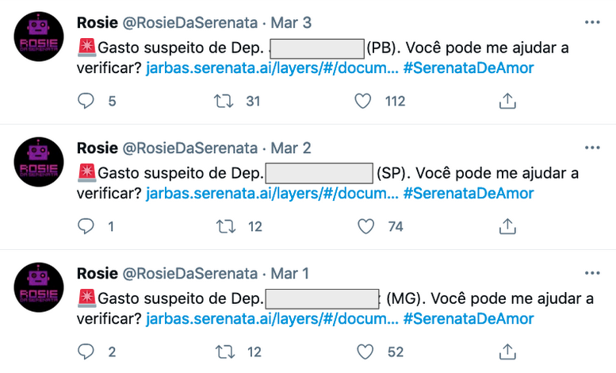
Como pode ser deduzido a partir deste exemplos, os textos produzidos seguem o mesmo template geral:
Gasto suspeito de {TITULO} {NOME} ({PARTIDO}).
Você pode me ajudar a verificar?O template consiste de três tags, TITULO, NOME e PARTIDO, as quais são substituídas pelos valores selecionados durante a fase de seleção de conteúdo. Por exemplo, consideremos a lista fictícia apresentada na Tabela 13.1 com nomes de deputados com seus respectivos partidos e gastos.
| Título | Nome | Partido | Gasto (R$) | Alertas |
|---|---|---|---|---|
| Dep. | Antonio | PF | 1500 | 1 |
| Dep. | João | PJ | 500 | 0 |
| Dep. | Maria | PK | 450 | 2 |
Neste exemplo, um gasto poderia ser classificado como suspeito se excedesse a média de gastos de todos os deputados. Caso esta tabela fosse dada como entrada para a etapa de Seleção de Conteúdo do sistema, tendo em vista que a média de gastos é de R$ 800, o gasto do deputado Antonio seria identificado como suspeito. Para publicação de um texto sobre este gasto, bastaria assim substituir as informações da tabela no template pré-estabelecido: “Gasto suspeito de Dep. Antonio (PF). Você pode me ajudar a verificar?”
13.2.3 Limitações
Arquiteturas baseadas em templates são possivelmente ideais para verbalização de mensagens simples, mas exibem problemas a medida que o volume de geração e a complexidade dos textos gerados aumentam. Como pode ser visto na Figura 13.4, os três textos da imagem seguem o mesmo formato geral. Uma estrutura engessada deste tipo pode incomodar o leitor, como argumentado em (Clerwall, 2014), onde notícias geradas automaticamente foram avaliadas como “chatas” apesar de também serem avaliadas como mais informativas, precisas, confiáveis e objetivas que notícias escritas por humanos. Além disso, a abordagem baseada em templates apresenta problemas para verbalizar estruturas de linguagem mais complexas como, por exemplo, as que exigem flexão de tempo, número e gênero. Para o mesmo exemplo anterior, consideremos que a abordagem Serenata de Amor selecionasse e gerasse um texto a partir do seguinte template:
Gasto suspeito de TITULO NOME (PARTIDO). Você pode me ajudar a verificar? O parlamentar possui ALERTAS alertas no mês.
De acordo com ambas mensagens, o gasto suspeito do deputado Antônio, selecionado a partir dos dados na Tabela 13.1, seria verbalizado da seguinte maneira:
Gasto suspeito de Dep. Antonio (PF). Você pode me ajudar a verificar? O parlamentar possui 1 alertas no mês.
Percebe-se então que a flexão de número está incorreta, já que o deputado possui somente um alerta no mês, enquanto o objeto direto da segunda mensagem encontra-se no plural. O mesmo aconteceria para verbalizar gastos suspeitos da deputada Maria, já que o sujeito da segunda sentença, “O parlamentar”, estaria com a flexão de gênero incorreta. Questões deste tipo são naturalmente difíceis de lidar em um esquema baseado em templates fixos, e acabam limitando seu uso em aplicações mais sofisticadas.
13.3 Arquitetura pipeline
A arquitetura pipeline visa gerar linguagem natural por meio de várias transformações da representação de entrada. Essa entrada é composta de vários módulos especialistas em diferentes funções do processo. Cada módulo gera uma representação intermediária para o próximo módulo, até a obtenção do texto final. A arquitetura pipeline é a mais popular entre as arquiteturas clássicas de geração de linguagem natural, popularizada por Reiter; Dale (2000) com a proposta de geração automática de linguagem natural em três fases sequenciais: (1) Planejamento de Documento, ou Macro-planejamento; (2) Planejamento de Sentença, ou Micro-planejamento; e (3) Realização Textual. A Figura 13.5 demonstra esta arquitetura.
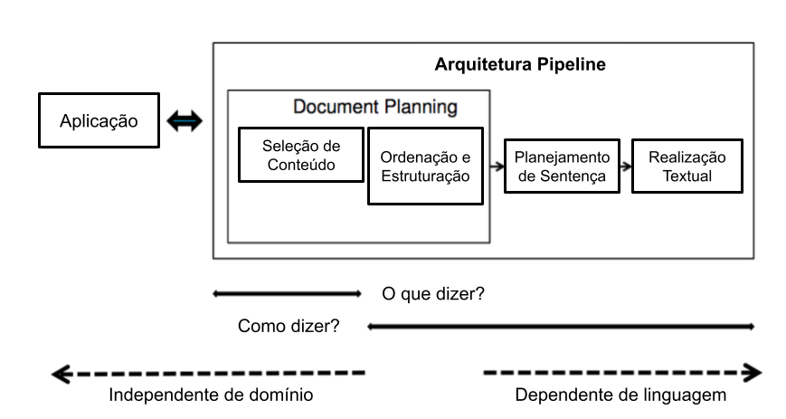
Fonte: (Santhanam; Shaikh, 2019)
O Planejamento do Documento contempla a seleção do conteúdo e sua estruturação na forma de de capítulos, seções, parágrafos, sentenças etc. O Macro-planejamento enfoca o planejamento de cada sentença do texto, incluindo as escolhas lexicais e das formas referenciais a serem usadas para mencionar as entidades-alvo do discurso. Por último, a fase de Realização Textual é responsável pelos ajustes finais do texto, como a conjugação dos verbos no formato correto de tempo, aspecto, modo e voz, bem como a concordância entre substantivos e verbos. Muitas vezes, os realizadores também precisam inserir palavras funcionais como verbos auxiliares e preposições e sinais de pontuação (Gatt; Krahmer, 2018).
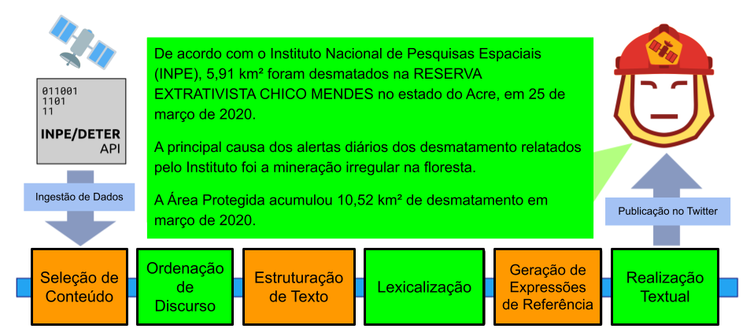
Fonte: (Teixeira et al., 2020)
Mais recentemente, Castro Ferreira et al. (2019) propuseram uma versão adaptada da arquitetura pipeline de Reiter; Dale (2000) onde cada módulo é implementado com o uso de redes neurais. A proposta converte uma representação não-linguística de entrada em texto a partir de seis etapas sequenciais: Seleção de Conteúdo, Ordenação de Discurso, Estruturação de Texto, Lexicalização, Geração de Expressões de Referência e Realização Textual. A Figura 13.6 mostra o robô-jornalista “DaMata”, desenvolvido a partir da arquitetura pipeline de Castro Ferreira et al. (2019) para cobrir o desmatamento na Amazônia Brasileira.
Na proposta de Castro Ferreira et al. (2019), as três etapas iniciais - Seleção de Conteúdo, Ordenação de Discuso e Estruturação de Texto - são parte do Planejamento de Documento, e visam selecionar, ordenar e estruturar o conteúdo a ser verbalizado em seções. Já no Planejamento de Sentença, o módulo de Lexicalização visa encontrar as frases e palavras adequadas para expressar o conteúdo a ser incluído em cada frase (Reiter et al., 2005; Smiley et al., 2016), enquanto a fase de Geração de Expressões de Referência envolve referenciar as entidades a serem mencionadas do texto (Krahmer; Deemter, 2012). Por fim, a Realização Textual é responsável pelos últimos ajustes para obter o texto final no idioma alvo de interesse.
13.3.1 Aplicações
Até recentemente, a arquitetura pipeline era a mais popular na geração de linguagem natural, fazendo com que esta abordagem tenha sido aplicada na geração automática de textos de diversos domínios, como nos esportes (Lee et al., 2017; Theune et al., 2001), previsão do tempo (Goldberg et al., 1994; Sripada et al., 2004), previsão de polenização (Turner et al., 2006), resumos de mergulhos autônomos (Sripada; Gao, 2007), descrições de eventos em turbinas a gás (Yu et al., 2007), informações do mercado de ações (Kukich, 1983), auxílio no tratamento do tabagismo (Reiter et al., 2003), relatórios de cuidados intensivos neonatais (Portet et al., 2009; Reiter, 2007), geração de dados enciclopédicos (Androutsopoulos et al., 2013; Duma; Klein, 2013) e de notícias (Campos et al., 2020; Teixeira et al., 2020).
Muitos estudos também focaram em aspectos específicos do processo como Seleção de Conteúdo (Barzilay; Lapata, 2005; Bouayad-Agha et al., 2012; Perez-Beltrachini et al., 2016), Estruturação de Texto/Agregação (Barzilay; Lapata, 2006; Bayyarapu, 2011), Lexicalização (Reiter et al., 2005; Smiley et al., 2016) e Geração de Expressões de Referência (Castro Ferreira et al., 2018; Castro Ferreira; Paraboni, 2014a; Dale; Haddock, 1991; Deemter, 2016a; Krahmer; Theune, 2002; Van Deemter et al., 2012).
13.3.2 Exemplo
Para exemplificar a arquitetura pipeline, utilizaremos o exemplo do CoronaReporter (Campos et al., 2020), robô jornalista desenvolvido com base na arquitetura de Castro Ferreira et al. (2019) para reportar os casos de COVID-19 no Brasil.
13.3.2.1 Seleção de Conteúdo
A fase de Seleção de Conteúdo do CoronaReporter visa selecionar um subconjunto das oito mensagens seguintes:
ACTIVE_CASES: número de casos ativos de COVID-19 no Brasil no dia atual;TOTAL_CASES: número total de casos de COVID-19 no Brasil;NEW_CASES: número de novos casos de COVID-19 no Brasil no dia atual;ACTIVE_CASES_VARIATION_LAST_DAY: variação de casos ativos de COVID-19 no Brasil em comparação ao dia anterior;CASES_VARIATION_LAST_DAY: variação de casos ativos e inativos de COVID-19 no Brasil em comparação ao dia anterior;NEW_DEATHS: número de mortes por COVID-19 no Brasil no dia atual;TOTAL_DEATHS: número total de mortes por COVID-19 no Brasil;DEATHS_VARIATION_LAST_DAY: variação no número de mortes por COVID-19 no Brasil em comparação ao dia anterior;
A Figura 13.7, extraída de Campos et al. (2020), mostra o processo baseado em regras de Seleção de Conteúdo do robô-jornalista. Caso o número de casos ativos tenha diminuído em comparação ao dia anterior, este número (ACTIVE_CASES(cases)) e sua variação (ACTIVE_CASES_VARIATION_LAST_DAY(variation, trend=low)) são selecionados. Caso contrário, a variação de casos tenha se mantido ou aumentado, os números do total de casos (TOTAL_CASES(cases)) e de mortes (TOTAL_DEATHS(deaths)) são selecionados.
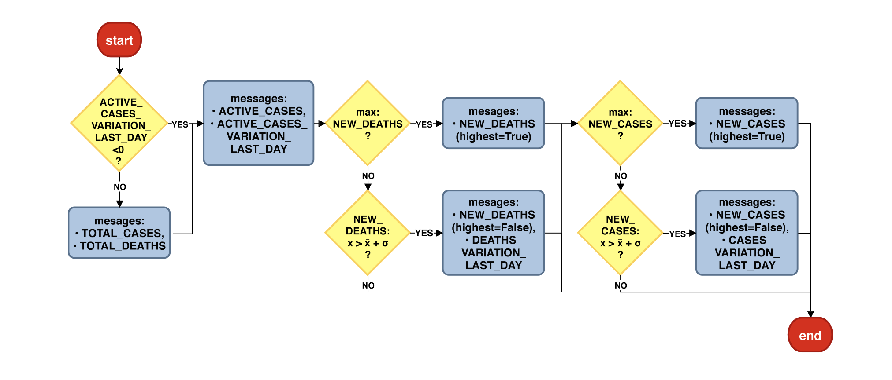
Fonte: (Campos et al., 2020)
Na sequência, o módulo de Seleção de Conteúdo analisa o número de mortes pela doença. Caso o número de mortes seja o maior da série histórica, esta mensagem é selecionada com um atributo que aponta para a ordem de grandeza: NEW_DEATHS(deaths, highest=True). Caso contrário, o módulo checa se o número de mortes é relevante para ser informado ao comparar se este é maior que a média de mortes mais o desvio padrão da série histórica. Em caso positivo, as mensagens correspondentes ao número de mortes no dia ((NEW_DEATHS(deaths))) e sua variação (DEATHS_VARIATION_LAST_DAY(variation, trend=high)) são selecionadas.
Por fim, o número de novos casos é analisado da mesma maneira que o número de novas mortes. Caso o número de casos ativos seja o maior da série histórica, esta mensagem é selecionada com um atributo que aponta para a ordem de grandeza: NEW_CASES(cases, highest=True). Caso contrário, o módulo checa se o número de casos ativos é maior que a média de casos mais o desvio padrão da série histórica. Em caso positivo, as mensagens correspondentes ao número de casos ativos no dia ((NEW_CASES(cases))) e a variação (CASES_VARIATION_LAST_DAY(variation, trend=high)) são selecionadas.
Para exemplificar as próximas etapas, consideremos as seguintes mensagens selecionadas:
DEATHS_VARIATION_LAST_DAY(trend="high", variation=0.06)
NEW_CASES(cases=15305, highest=True)
NEW_DEATHS(deaths=824, highest=False)
TOTAL_CASES(cases=218223)
TOTAL_DEATHS(deaths=14817)13.3.2.2 Ordenação do Discurso
Uma vez feita a seleção de conteúdo, a etapa de Ordenação de Discurso visa disponibilizar as mensagens selecionadas na ordem que devem aparecer no texto. A ordenação pode ser feita por meio de regras ou de técnicas de aprendizagem de máquina, como em Castro Ferreira et al. (2019).
No nosso exemplo, as mensagens selecionadas poderiam ser ordenadas da seguinte maneira:
TOTAL_CASES(cases=218223)
NEW_CASES(cases=15305, highest=True)
NEW_DEATHS(deaths=824, highest=False)
TOTAL_DEATHS(deaths=14817)
DEATHS_VARIATION_LAST_DAY(trend="high", variation=0.06)13.3.2.3 Estruturação do Texto
Última fase do módulo de Planejamento de Documento, a estruturação do texto visa agrupar as mensagens selecionadas em capítulos, seções, parágrafos, sentenças ou outras unidades textuais de interesse. No nosso exemplo, as mensagens selecionadas e ordenadas podem ser organizadas em um único parágrafo de duas sentenças da seguinte maneira:
<PARAGRAPH>
<SENTENCE>
TOTAL_CASES(cases=218223)
NEW_CASES(cases=15305, highest=True)
</SENTENCE>
<SENTENCE>
NEW_DEATHS(deaths=824, highest=False)
TOTAL_DEATHS(deaths=14817)
DEATHS_VARIATION_LAST_DAY(trend="high", variation=0.06)
</SENTENCE>
</PARAGRAPH>13.3.2.4 Lexicalização
A fase de Lexicalização, que é a primeira no Planejamento de Sentença, visa encontrar as frases e palavras adequadas para expressar o conteúdo a ser verbalizado. No exemplo do sistema CoronaReporter (Campos et al., 2020), os desenvolvedores definiram templates de lexicalização para cada estrutura de sentença. Para a primeira sentença do nosso exemplo, composta pelas mensagens de total (TOTAL_CASES) e novos casos com máxima histórica de COVID ((NEW_CASES(highest=True))), um exemplo de template seria:
COUNTRY_1 VP[aspect=simple,tense=present,voice=active,
person=COUNTRY_1,number=COUNTRY_1] totalizar CASES_1
NN[number=CASES_1,gender=male] caso de #COVID-19 , CASES_2
NN[number=CASES_2,gender=male] caso a mais de o que
em o dia anterior .Assim como na arquitetura baseada em templates, tags são usadas para que as referências às entidades possam ser inseridas pelo módulo subsequente de Geração de Expressões de Referência. Contudo, os templates de lexicalização da arquitetura pipeline são mais flexíveis que os da arquitetura baseada em templates ao representar parte das palavras abertas em sua forma base, antecedidas pelas informações de como devem ser flexionadas nas etapas posteriores. Por exemplo, o verbo “totalizar” seria representado no template da seguinte forma:
VP[aspect=simple,tense=present,voice=active,
person=COUNTRY_1,number=COUNTRY_1] totalizarVeja que o verbo é definido no aspecto simples, no tempo presente e na voz ativa. Já a pessoa e o número são definidos de acordo com a entidade a ser referenciada na tag COUNTRY_1.
No exemplo anterior, todas as sentenças poderiam ser lexicalizadas da seguinte maneira:
<PARAGRAPH>
<SENTENCE>
COUNTRY_1 VP[aspect=simple,tense=present,voice=active,
person=COUNTRY_1,number=COUNTRY_1] totalizar CASES_1
NN[number=CASES_1,gender=male] caso de #COVID-19 ,
CASES_2 NN[number=CASES_2,gender=male] caso a mais
de o que em o dia anterior .
</SENTENCE>
<SENTENCE>
Desde ontem , VP[aspect=simple,tense=past,voice=passive,
person=DEATHS_1,number=DEATHS_1,gender=female] registrar
em COUNTRY_1 DEATHS_1 ADJ[number=DEATHS_1,gender=female]
novo NN[number=DEATHS_1,gender=female] morte , que agora
VP[aspect=simple,tense=present,voice=active,
person=DEATHS_2,number=DEATHS_2] somar DEATHS_2 ,
representando DT[number=singular,gender=TREND_1] um TREND_1
ADJ[number=singular,gender=TREND_1] diário de VARIATION_1 .
</SENTENCE>
</PARAGRAPH>13.3.2.5 Geração de Expressões de Referência
Após a etapa de Lexicalização, o módulo de Geração de Expressões de Referência do sistema CoronaReporter tem primeiramente a tarefa de mapear as tags dos templates para as entidades a serem referenciadas. Em seguida, deve gerar as expressões de referência para essas entidades, levando em consideração o contexto de cada uma, e atualizar as informações de pessoa e gênero dos termos relevantes.
Para a tarefa de mapeamento, o resultado seria algo como:
COUNTRY_1 -> Brasil
CASES_1 -> 218223
CASES_2 -> 15305
DEATHS_1 -> 824
DEATHS_2 -> 14817
TREND_1 -> high
VARIATION_1 -> 0.06 Uma vez feito o mapeamento entre as tags e entidades, as expressões de referência a cada entidade devem ser geradas e colocadas no lugar das respectivas tags com base no contexto onde se encontram. Por exemplo, a primeira referência ao país “Brasil” na primeira sentença pode ser feita usando-se o seu nome próprio, ou seja, “O Brasil”. Já a segunda referência na segunda sentença pode ser feita através de uma descrição como (“o país”) para manter a fluência do texto evitando que se torne repetitivo. Juntamente com a geração das expressões de referência a uma entidade, as informações de gênero e número das palavras abertas afetadas podem ser atualizadas. Por exemplo, como a entidade “Brasil” se encontra na terceira pessoa do singular, o verbo “totalizar” na primeira sentença pode ser atualizado de acordo:
VP[aspect=simple,tense=present,voice=active,
person=3rd,number=singular] totalizarPor fim, a representação intermediária após o módulo de Geração de Expressão de Referência para o nosso exemplo poderia ser feita da seguinte forma:
<PARAGRAPH>
<SENTENCE>
O Brasil VP[aspect=simple,tense=present,voice=active,
person=3rd,number=singular] totalizar 218,223
NN[number=plural,gender=male] caso de #COVID-19 ,
15,305 NN[number=plural,gender=male] caso a mais
de o que em o dia anterior .
</SENTENCE>
<SENTENCE>
Desde ontem , VP[aspect=simple,tense=past,voice=passive,
person=3rd,number=plural,gender=female] registrar
em o país 824 ADJ[number=plural,gender=female]
novo NN[number=plural,gender=female] morte , que agora
VP[aspect=simple,tense=present,voice=active,
person=3rd,number=plural] somar 14,817 ,
representando DT[number=singular,gender=female] um alta
ADJ[number=singular,gender=female] diário de 6% .
</SENTENCE>
</PARAGRAPH>A Geração de Expressões de Referência é uma tarefa complexa, envolvendo não apenas a seleção de conteúdo adequado a um determinado contexto como também medidas para evitar, por exemplo, a geração de expressões ambíguas, entre outros objetivos muitas vezes conflitantes. Assim, por exemplo, além de selecionar o conteúdo adequado para referenciar uma entidade (e.g. “o deputado maranhense”), o algoritmo precisa garantir que este conteúdo especifica a entidade-alvo (o deputado em questão) de forma única naquele contexto, ou seja, sem risco de ser confundido com outro alvo (e.g. outros deputados maranhenses) em discussão. O fenômeno de referência tem sido um tópico de interesse recorrente na GLN baseada na arquitetura pipeline e áreas correlatas, tanto no que diz respeito à proposta de abordagens computacionais (Castro Ferreira; Paraboni, 2014a, 2014b; Deemter, 2016b; Krahmer et al., 2003; Santos Silva; Paraboni, 2015) como conjuntos de dados anotados com informação semântica (Gargett et al., 2010; Gatt et al., 2007; Paraboni et al., 2017; Viethen; Dale, 2011).
13.3.2.6 Realização Textual
A fase de Realização Textual é responsável pelos últimos ajustes para obtenção do texto final, como a flexão das palavras no formato correto de acordo com o seu contexto. Por exemplo, o verbo “totalizar” da primeira sentença seria flexionado como:
VP[aspect=simple,tense=present,voice=active,
person=3rd,number=singular] totalizar -> totalizaO substantivo “caso” seria flexionado no plural como indicado:
NN[number=plural,gender=male] caso -> casosO artigo indefinido “um” na última sentença seria verbalizado na forma singular e feminina:
DT[number=singular,gender=female] um -> umaAlém da correta flexão das palavras abertas, as contrações do português seriam resolvidas (“em o” -> “no”) e o espaçamento seria solucionado em um processo chamado de detokenização (e.g. “Desde ontem ,” -> “Desde ontem,”).
Por fim, o texto do nosso exemplo seria realizado como:
O Brasil totaliza 218.223 casos de #COVID-19, 15.305 casos a mais do
que no dia anterior. Desde ontem, foram registradas no país 824 novas
mortes, que agora somam 14.817, representando uma alta diária de 6%.13.3.3 Limitações
A arquitetura pipeline possui algumas limitações bastante relevantes para o desenvolvimento de aplicações de GLN de propósito mais geral. Para o desenvolvimento de uma abordagem em regras de um módulo como o de Estruturação de Texto, por exemplo, seria necessário construir manualmente um grande número de regras para agrupar em sentenças a combinação de mensagens ordenadas vindas do módulo de Ordenação do Discurso. No caso de uma abordagem baseada em aprendizagem de máquina, seria necessária uma grande quantidade de dados paralelos anotados entre mensagens ordenadas e seus agrupamentos em sentenças. O mesmo se repete para qualquer módulo da arquitetura pipeline após a Seleção de Conteúdo.
Em conclusão, seja em uma abordagem baseada em regras ou de aprendizagem de máquina, a arquitetura pipeline demanda um grande esforço para implementação das regras e anotação das representações intermediárias de cada módulo, respectivamente. Tal esforço pode tornar inviável a construção de sistemas de GLN que demandam a verbalização de uma grande quantidade de mensagens e sua combinação.
13.4 Arquitetura Ponta-a-Ponta
Diferentemente da arquitetura pipeline discutida na seção anterior, a arquitetura ponta-a-ponta (em inglês, end-to-end) visa gerar um texto a partir de uma representação (ou outro texto) de entrada sem representações intermediárias explícitas. Esta arquitetura popularizou-se a partir do avanço dos modelos de aprendizado profundo, principal ferramenta utilizada na geração de linguagem natural ponta-a-ponta. Estas arquiteturas são discutidas a seguir, fazendo uso de alguns conceitos que também são discutidos na Subseção Modelos de Linguagem Neurais Modernos, como o uso de encoders, mecanismos de atenção e as arquiteturas do tipo Transformer.
- Treinamento e Inferência
-
Modelos do tipo ponta-a-ponta são treinados em uma grande quantidade de dados paralelos que fazem um mapeamento das representações de entrada para seus respectivos textos de saída. Uma vez adequadamente treinados, estes modelos são aplicados à geração de textos.
- Encoder-Decoder
-
Sutskever et al. (2014) foi um dos primeiros estudos a aplicar uma arquitetura ponta-a-ponta na tarefa de geração de texto, no caso usando uma máquina de tradução. Nesta abordagem, dado um texto de entrada em um determinado idioma, um modelo neural é usado para codificar esta sequência textual, token por token, em representações vetoriais do tipo embeddings (Mikolov et al., 2013). A representação vetorial de entrada obtida após a codificação do último token de entrada é então decodificada, também token por token em uma sentença no idioma alvo até a obtenção de um token sinalizador de parada. Esta arquitetura, conhecida como encoder-decoder é ilustrada na Figura 13.8.
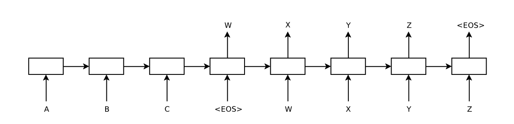
Fonte: (Sutskever et al., 2014)
- Mecanismo de Atenção
-
Em (Bahdanau et al., 2015), a arquitetura encoder-decoder foi acrescida de um mecanismo de atenção do tipo comumente aplicado a máquinas de tradução, sendo distinta da arquitetura encoder-decoder simples no que diz respeito ao processo de decodificação. De forma mais específica, para cada token decodificado, as representações vetoriais codificadas são combinadas em uma única representação a partir do peso de importância de cada um dos tokens de entrada. Assim, o processo de decodificação aprende em qual token de entrada prestar atenção quando gerar cada token no idioma alvo. Este mecanismo de atenção é ilustrado na Figura 13.9.
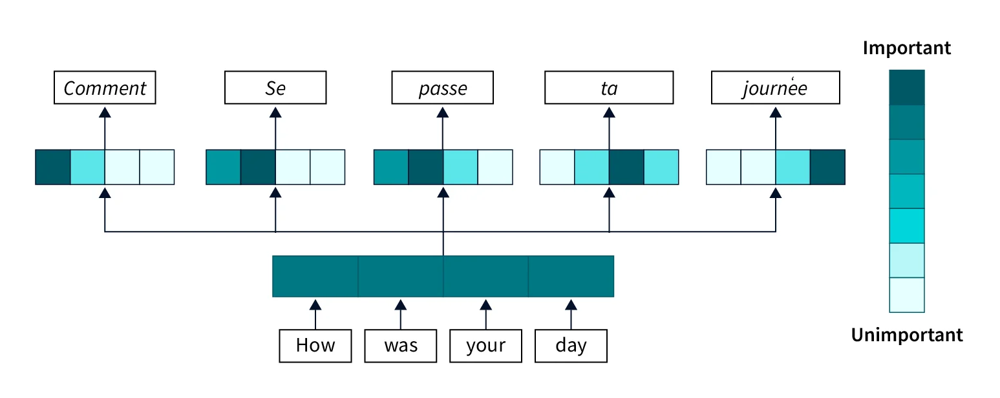
Fonte: (Malingan, 2024)
A Figura 13.10 mostra o mapa de calor dos pesos de atenção ao traduzir uma sentença do inglês para o francês. Observa-se neste exemplo como um maior peso de atenção ao token de entrada agreement é dado ao gerar o token accord em francês. Nas avaliações conduzidas, Bahdanau et al. (2015) mostram como o mecanismo de atenção aumenta significativamente a adequação e fluência das traduções.
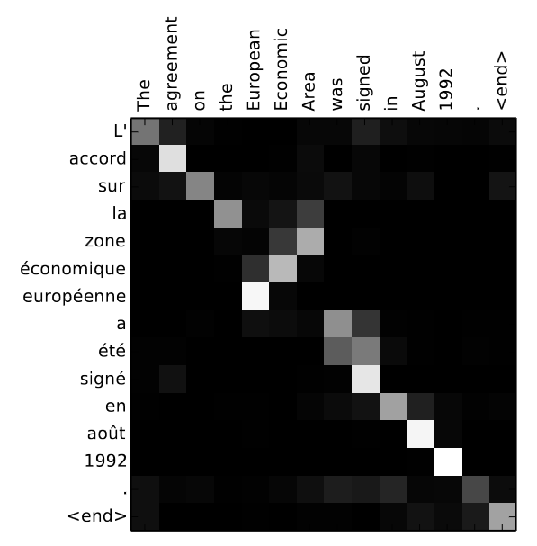
Fonte: (Bahdanau et al., 2015)
- Transformer
-
Vaswani et al. (2017) introduziram a arquitetura neural conhecida por Transformer, que é considerada o estado-da-arte até o momento da escrita deste capítulo. Esta arquitetura é ilustrada na Figura 13.11.
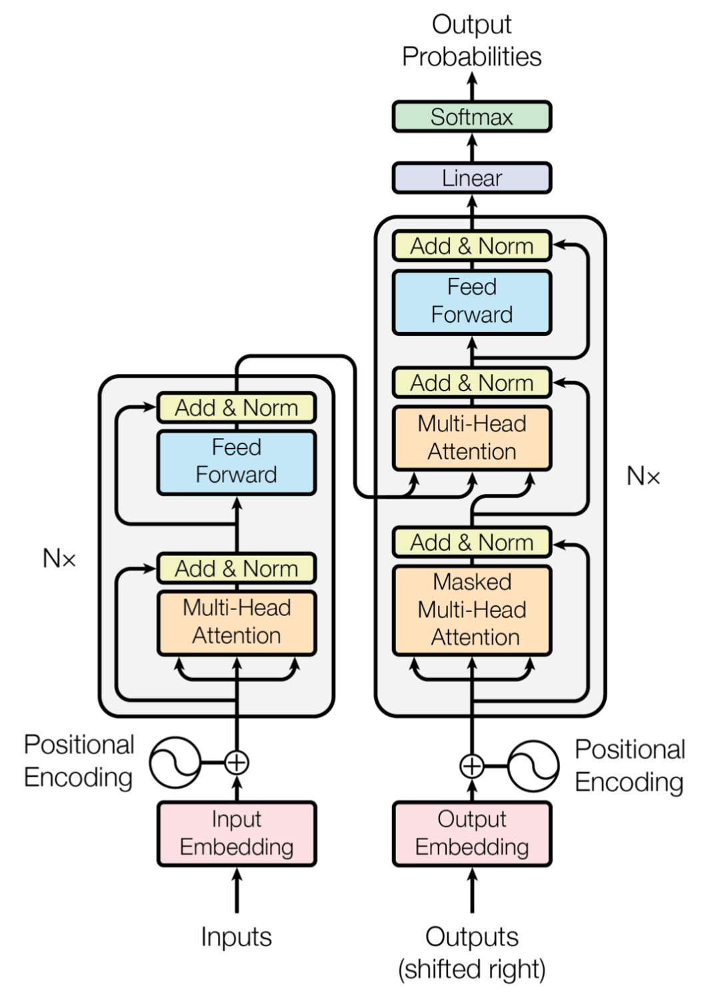
Fonte: (Vaswani et al., 2017)
Como pode ser visto na Figura 13.11, a arquitetura também se divide entre um módulo codificador e outro decodificador. Uma das principais diferenças da arquitetura encoder-decoder com mecanismo de atenção (Bahdanau et al., 2015) é o fato de que Transformers também aplicam os pesos de atenção no processo de codificação, ou seja, ao gerar a representação vetorial de um token de entrada, leva-se em conta os pesos de atenção de seus tokens antecessores e sucessores de entrada. Além disso, esta arquitetura é otimizada para o processo de treinamento, que tende a processar mais tokens em um menor espaço de tempo e ser mais eficiente do que sua antecessora14.
13.4.1 Aplicações
Arquiteturas ponta-a-ponta são aplicadas a uma ampla gama de sistemas de GLN recentes. O estudo em (Wen et al., 2015) propõe um modelo generativo ponta-a-ponta encoder-decoder com camadas de Long Short-Term Memory (LSTM) semanticamente condicionadas para realizar textualmente informações sobre locais de hotéis e restaurantes; em (Wen et al., 2016), utiliza-se um modelo semelhante para verbalizar representações semânticas sobre avaliações de laptops e televisores; em (Lebret et al., 2016) e (Chisholm et al., 2017), são propostos modelos neurais para gerar frases biográficas a partir de tabelas de fatos de biografias da Wikipédia; em (Dong et al., 2017), é proposto um modelo neural para realizar textualmente avaliações de produtos; finalmente, em (Mei et al., 2016) é proposto um modelo de GLN ponta-a-ponta para verbalização de dados do tempo e competições robóticas.
No campo dos desafios computacionais do tipo shared-task, muitos dos sistemas competidores seguem a arquitetura ponta-a-ponta e tornaram-se referências na área. Dentre os mais famosos destaca-se o desafio WebNLG (Ferreira et al., 2020; Gardent et al., 2017), cujo o objetivo é a verbalização de representações semânticas da base de web semântica DBPedia (Bizer et al., 2009); o E2E Challenge (Dušek et al., 2018), que visa a verbalização de informações sobre restaurantes; e o desafio GEM (Gehrmann et al., 2021) cujo o objetivo é criar um benchmark dinâmico para GLN, sua avaliação e métricas, enfrentando as dificuldades na medição do progresso em GLN, que dependem de métricas automatizadas, conjuntos de dados e padrões de avaliação humana em constante evolução. Os artigos que descrevem cada um destes desafios apresentam informações sobre os sistemas participantes.
13.4.2 Exemplo – sistema CoronaReporter
Como exemplificado na Subseção Exemplo, o sistema CoronaReporter (Campos et al., 2020) utiliza uma arquitetura pipeline com múltiplas representações intermediárias entre os números de COVID-19 no Brasil e o relatório textual final sobre o assunto. Se este mesmo robô-jornalista fosse construído de acordo com a arquitetura ponta-a-ponta, observa-se que, após a seleção de conteúdo, uma rede neural encoder-decoder ou Transformer poderia ser treinada em uma grande quantidade de dados paralelos para realizar textualmente o conteúdo selecionado sem representações intermediárias explícitas. Neste caso, o conteúdo selecionado de exemplo na Subseção Exemplo seria diretamente convertido no texto final correspondente como exemplificado a seguir.
Conteúdo Selecionado:
DEATHS_VARIATION_LAST_DAY(trend="high", variation=0.06)
NEW_CASES(cases=15305, highest=True)
NEW_DEATHS(deaths=824, highest=False)
TOTAL_CASES(cases=218223)
TOTAL_DEATHS(deaths=14817)
Texto Realizado:
O Brasil totaliza 218.223 casos de #COVID-19, 15.305 casos a mais do
que no dia anterior. Desde ontem, foram registradas no país 824 novas
mortes, que agora somam 14.817, representando uma alta diária de 6%.Outros exemplos de arquiteturas neurais para o caso específico da geração de texto em português incluem as tarefas de sumarização neural (Costa; Paraboni, 2019), e a transferência de estilo para geração de posicionamentos (Costa; Paraboni, 2024) e discursos políticos (Costa; Paraboni, 2023).
13.4.3 Limitações
Conforme discutido nesta seção, arquiteturas de GLN ponta-a-ponta são baseadas em modelos neurais como encoder-decoder e Transformer. Tais abordagens demandam uma ampla quantidade de dados para treinamento, o que implica na necessidade de um grande volume de dados paralelos entre representações semânticas e seus textos correspondentes. Isso representa um alto custo de treinamento, sendo uma das limitações dessas arquiteturas.
Além disso, apesar de produzirem textos mais fluentes que as arquiteturas mais tradicionais, a primeira geração de sistemas ponta-a-ponta tem sérios problemas de adequação e, em especial, o problema conhecido como alucinação (Ji et al., 2023) em que o modelo pode gerar informações que parecem plausíveis, mas que não correspondem à realidade ou ao conhecimento factual correto. Algumas destas limitações têm sido mitigadas com o uso de técnicas como pré-treinamento e refinamento com base em prompts, como veremos na próxima seção.
13.5 Arquiteturas Pré-treinadas
Inicialmente, arquiteturas neurais ponta-a-ponta eram treinadas uma única vez para um domínio específico de GLN, como a verbalização de casos de COVID-19 no Brasil exemplificado na Subseção Exemplo – sistema CoronaReporter. No entanto, como neste caso os pesos das redes neurais são inicializados de forma aleatória durante o treinamento, abordagens deste tipo exigem uma grande quantidade de dados anotados no domínio específico.
Como forma de otimizar este processo, atualmente as aplicações ponta-a-ponta de GLN têm seu treinamento iniciado a partir de modelos neurais pré-treinados, que são construídos com base em tarefas genéricas com uso de grandes volume de dados. Segundo (Raffel et al., 2020), esse pré-treinamento faz com que o modelo desenvolva habilidades e conhecimentos de uso geral que podem então ser transferidos para tarefas posteriores, como a GLN. A seguir discutimos brevemente alguns exemplos populares de modelos neurais pré-treinados refinados para aplicações deste tipo.
- BERT
-
BERT (Bidirectional Encoder Representations from Transformers) utiliza a arquitetura Transformer para capturar contextos bidirecionais em textos (Devlin et al., 2019). Neste modelo, discutido em mais detalhes na Subseção Codificador: BERT e seus amigos, o processo de pré-treinamento envolve duas tarefas principais: a Masked Language Modeling (MLM), onde palavras aleatórias em uma frase são mascaradas e o modelo é treinado para prever essas palavras, e Next Sentence Prediction (NSP), onde o modelo aprende a entender a relação entre pares de frases. Essa fase resulta em representações ricas e contextualmente robustas. Apesar de ter sido refinada para tarefas de geração, este modelo é comumente aplicado em tarefas de classificação de texto.
- T5
-
T5 é um modelo de linguagem encoder-decoder conhecido como Text-To-Text Transfer Transformer e desenvolvido pelo Google Research (Raffel et al., 2020), e discutido em mais detalhes na Subseção Instâncias de um Transformer inteiro: T5 e seus aliados. Este modelo adota uma abordagem unificada para lidar com diversas tarefas de PLN ao transformá-las em problemas de entrada-saída de texto para texto. Durante o pré-treinamento, o modelo T5 é alimentado com uma vasta quantidade de dados textuais em diversas tarefas estruturadas como
*Instrução $+$ texto de entrada\(\rightarrow\)texto de saídado corpus C4, publicado juntamente com o modelo de linguagem. Por exemplo, para uma tarefa de tradução, a entrada pode ser “translate English to French: How are you?” e a saída esperada seria “Comment ça va?”. Essa formulação unificada permite que o mesmo modelo trate diversas tarefas como tradução, análise de sentimento, sumarização de texto e respostas a perguntas de maneira consistente. Este estilo de treinamento é muito popular na atualidade, e ficou conhecida como aplicações baseadas em prompts (i.e. instruções) ou Inteligência Artificial Generativa. - GPT
-
GPT (Generative Pre-trained Transformer) é uma família de modelos neurais de linguagem baseado na parte decodificadora da arquitetura Transformer (Achiam et al., 2023; Brown et al., 2020). A abordagem de geração é representada na forma de um processo auto-regressivo, em que o modelo prevê a próxima palavra em uma sequência com base nas palavras anteriores, e gera texto de forma sequencial. No processo de pré-treinamento, o modelo é treinado em grandes corpora de textos para prever a próxima palavra em uma sequência dada, utilizando apenas o contexto das palavras anteriores. Esse treinamento em grande escala permite ao GPT aprender representações linguísticas e semânticas muito ricas, assim como ser capaz de resolver diversas tarefas formatadas de maneira textual. Por esta razão, este modelo é comumente utilizado como uma IA generativa.
- BART
-
BART é um modelo neural encoder-decoder que combina as vantagens dos Transformers bidirecionais, como o BERT, com propriedades auto-regressivas, como o GPT (Lewis et al., 2020). Semelhante aos modelos anteriores, no processo de pré-treinamento as entradas textuais são corrompidas por meio de diversas técnicas, como Masked Language Modeling (MLM) do BERT e permutação de palavras, e o modelo é treinado para reconstruir o texto original. Esse processo permite que o modelo BART aprenda a compreender e corrigir distorções em textos, resultando em representações robustas e flexíveis.
13.5.1 Aplicações
Modelos pré-treinados são amplamente utilizados em sistemas de GLN da atualidade. O modelo T5 foi treinado com instruções relacionadas a tarefas de GLN como máquinas de tradução, sumarização de texto e perguntas e respostas (Raffel et al., 2020); em (Guo et al., 2020) é abordado o refinamento da arquitetura T5 no corpus WebNLG para realização textual de representações da web semântica; em (Rothe et al., 2020) é investigado o refinamento de modelos pré-treinados como GPT, BERT e suas variantes nas tarefas de máquinas de tradução, sumarização e split-and-rephrase, a qual busca reescrever uma frase longa em duas ou mais frases curtas e coerentes; em (Almasi; Schiønning, 2023), é proposta uma versão refinada do modelo GPT-3 para a geração de notícias em dinamarquês; em (Koppatz et al., 2022), é proposta uma aplicação semelhante para geração de títulos de notícias em finlandês; (Xie et al., 2023) faz uma investigação profunda do uso de IAs generativas na geração de histórias (e.g. storytelling); em (Wang et al., 2023) é abordada uma aplicação de IA generativa no contexto de sistemas de diálogo; finalmente, em (Hicke et al., 2023) foi avaliado o uso de modelos de linguagem como GPT-2, DialogGPT e GPT-4 na geração de respostas acuradas no domínio da educação.
13.5.2 Exemplo
A Figura 13.12 ilustra a implementação do módulo de Realização Textual do robô-jornalista CoronaReporter utilizando a IA Generativa GPT-4o que, no momento da escrita deste capítulo, é uma das mais recentes versões da arquitetura GPT.
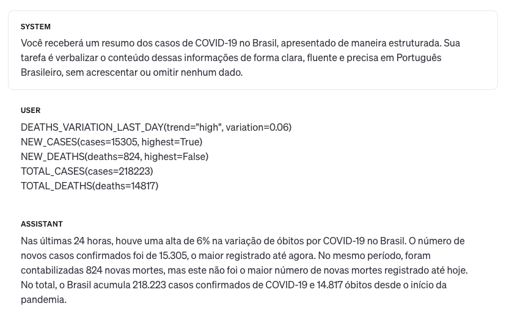
Como pode ser visto na Figura 13.12, neste caso o conteúdo selecionado é dado como entrada para o modelo, antecedido por uma mensagem de sistema instruindo-o como processá-la. Esta instrução explica o domínio e contexto da entrada fornecida (e.g. resumo dos casos de COVID-19 no Brasil) e como a mesma deve ser processada (e.g. converter o conteúdo em um texto em português claro, fluente e preciso). A representação estruturada de entrada consiste nas mensagens selecionadas a serem verbalizadas, cada uma formatada com um predicado identificador do tipo da mensagem (pe. NEW_CASES, NEW_DEATHS) juntamente com seus atributos e respectivos valores (e.g. cases=15035 etc.). A saída gerada pelo modelo é apresentada no parágrafo Assistant na mesma figura. Seguindo a instrução de sistema, o modelo de linguagem é capaz de verbalizar o texto resultante em português brasileiro de maneira fluente e adequada, mesmo com a representação semântica de entrada tender à língua inglesa.
13.5.3 Limitações
Uma das principais limitações das IAs Generativas é o fato de não terem informações atualizadas. Como exemplificado na Figura 13.13, ao perguntar sobre o número de medalhas que o Brasil ganhou nas Olimpíadas de Paris em 2024, o modelo GPT-4o informaria que não possui esta informação, já que seu último treinamento data de Outubro de 2023.
Técnicas utilizadas para sanar este tipo de problema incluem refinar (fine-tuning) o modelo com informações atualizadas, ou aplicar a técnica de engenharia de prompt conhecida como Retrieval Augmented Generation (Gao et al., 2024), que consiste de um sistema de busca seguido da IA generativa em que, dada uma instrução de entrada, o sistema de busca recupera os documentos mais semelhantes à instrução, e os fornece como contexto para a IA generativa prover uma resposta adequada.
Modelos de linguagem neurais também possuem limitações na resolução de alguns tipos de tarefas, como as que demandam operações aritméticas. Pesquisadores têm buscado resolver este problema a partir do uso de IAs Generativas como Agentes (Karpas et al., 2022; Yao et al., 2023). Nesta abordagem, os agentes têm disponíveis uma série de ferramentas, como web serviços, calculadoras, outras soluções de Inteligência Artificial e, dada uma instrução, cabe ao agente interpretar o problema, segmentá-lo em problemas menores, e delegar suas soluções às ferramentas mais adequadas para resolvê-los.
13.6 Conclusão
Um dos principais objetivos deste capítulo foi o de mostrar a linha do tempo dos modelos de geração de linguagem natural e sua nítida evolução ao longo dos anos. Se nos primórdios estes sistemas visavam somente avaliar a adequação de gramáticas de língua inglesa sem necessariamente considerar um significado real (Yngve, 1961), hoje vemos modelos de linguagem neurais poderosos, capazes de gerar textos variados e de alta adequação para verbalização de informações em diferentes domínios e linguagens. Usando a analogia introduzida no começo do capítulo, em termos de qualidade, os novos textos gerados automaticamente se distanciam dos ruídos da biblioteca de Borges, estando muito mais próximos daqueles indexados pelos bibliotecários da instituição fictícia.
Do modelo de Yngve (1961) aos modelos de linguagem como ChatGPT, a evolução da área de GLN passa por arquiteturas tradicionais como a baseada em templates e a arquitetura pipeline, capazes de gerar textos adequados e fiéis à informação de entrada, contudo repetitivos e engessados em termos de fluência. Além disso, estes sistemas demandam um grande esforço manual para implementação de regras e anotação de suas representações, tornando-os inviáveis para uma aplicação que demande a verbalização de uma grande variedade de tipos de mensagens. Com base nestas limitações, podemos assim concluir que a aplicação de arquiteturas de GLN tradicionais é atualmente recomendada apenas para domínios restritos e bem específicos.
Mais recentemente, arquiteturas de GLN ponta-a-ponta mostraram-se capazes de gerar textos mais fluentes que suas arquiteturas antecessoras, e sem a necessidade do desenvolvimento de regras ou a anotação manual de representações intermediárias. Contudo, o treinamento de aplicações ponta-a-ponta demanda uma grande quantidade de dados de treinamento e um alto poder computacional, tornando seu desenvolvimento mais custoso que no caso das arquiteturas antecessoras. Estas arquiteturas também sofrem com problemas de adequação, em especial o fenômeno da alucinação, podendo omitir ou adicionar informações que deveriam ou não estar no texto gerado.
Por fim, arquiteturas ponta-a-ponta pré-treinadas, também conhecidas como IAs generativas, representam o atual estado da arte em muitas tarefas desafiadoras para seres humanos, incluindo diversas aplicações de GLN. Embora possam ser refinados para um domínio específico (processo conhecido como fine-tuning), esses modelos já são capazes de gerar texto em sua versão pré-treinada, mitigando a necessidade de grandes volumes de dados de treinamento típicos das arquiteturas ponta-a-ponta. No entanto, um ponto negativo deste tipo de abordagem é o crescimento exponencial do tamanho desses modelos. Por exemplo, enquanto o modelo GPT-2 possui 1,5 bilhões de parâmetros, estima-se que o GPT-4 tenha quase 2 trilhões. A demanda por dados e capacidade computacional para treinar e executar esses modelos está diretamente relacionada ao seu tamanho e, consequentemente, o custo de pré-treinamento e uso de um modelo como o GPT-4 é tão elevado que seu acesso fica restrito a grandes empresas. Cidadãos comuns, pequenas empresas e laboratórios de pesquisa geralmente só conseguem utilizá-los por meio dessas grandes corporações.
Em conclusão, o futuro da área de GLN passa por melhor entender as falhas de fluência e adequação das IAs Generativas, atuais modelos estado-da-arte. Em específico, necessita-se entender melhor o que estes modelos de linguagem neurais não podem ou têm dificuldades em fazer. Tal entendimento passa pela pesquisa e desenvolvimento de melhores corpora e métricas de avaliação. Uma vez que o conhecimento das limitações destes modelos ficar mais clara, o andamento do campo de pesquisa em GLN indica para a aplicação de Agentes (Karpas et al., 2022; Yao et al., 2023), que são modelos de linguagem instruídos em gerenciar um grande número de ferramentas para resolução de problemas. Além disso, espera-se uma democratização do acesso destes modelos, seja através da disponibilização de modelos públicos, pesquisa de técnicas para barateamento de custos de execução, e avaliação de seu uso numa maior variedade de línguas.
A figura geométrica sem curvas mais próxima de um círculo.↩︎
Pseudocódigo gerado por GPT-4 Turbo e traduzido e revisado pelos autores.↩︎
Professor de Linguística da Universidade de Chicago e do Instituto de Tecnologia de Massachusetts (MIT).↩︎
As sentenças foram automaticamente geradas a partir do livro infantil chamado Engineer Small and the Little Train.↩︎
Parceria entre a Agência Pública e Repórter Brasil.↩︎
Extraída de https://x.com/RosieDaSerenata.↩︎
Apesar do processo de treinamento da arquitetura Transformer ser mais rápido do que a arquitetura proposta em (Bahdanau et al., 2015), o processo de inferência tende a ser mais lento.↩︎